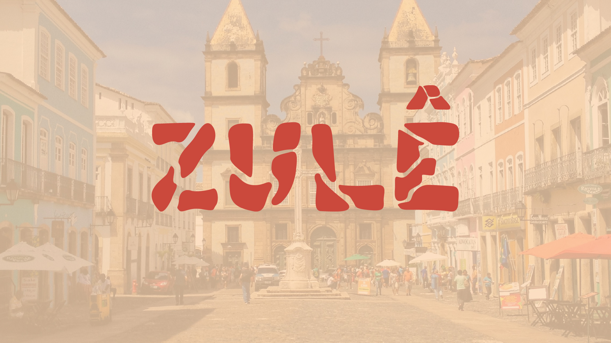
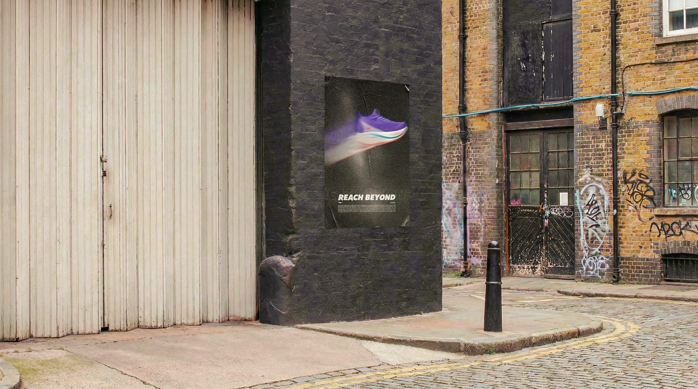
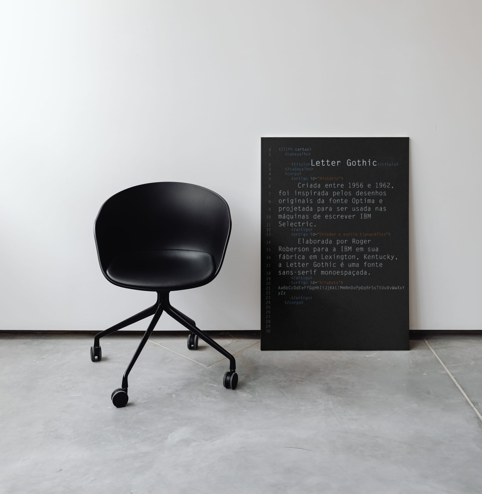
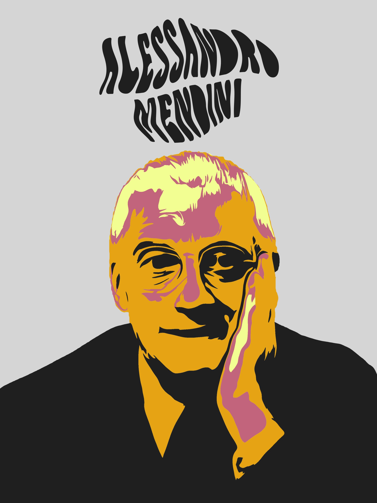
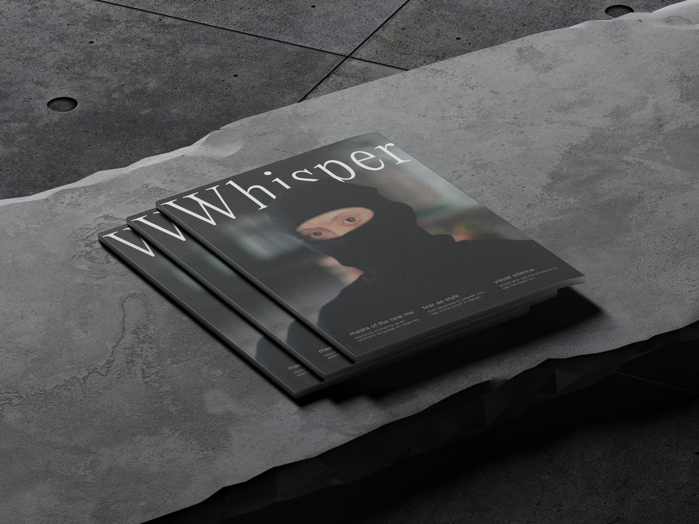

Estudos
Exercícios de sala de aula, homenagem e experimentação. Mostram processo, não entregável.
01

ZULÊ
2024Estudo tipográfico coletivo, com Sofia Schein, inspirado nos azulejos brasileiros e no chão caquinho: cada letra nasce de gestos fragmentados e artesanais.
02

Mizuno / Reach Beyond
2024Pôster autoral criado como desafio proposto na faculdade, explorando motion blur para divulgar a nova linha Neo da Mizuno.
03

Letter Gothic — All Type
2023Estudo tipográfico sobre a Letter Gothic: origem, história e peculiaridades da família.
04

Alessandro Mendini — Stencil
2023Estudo de stencil autoral inspirado no designer italiano.
05

Whisper
2023Capa conceitual para a revista Whisper, criada a partir da releitura do Retrato de Massimiliano Stampa, de Sofonisba Anguissola, em uma linguagem visual silenciada.